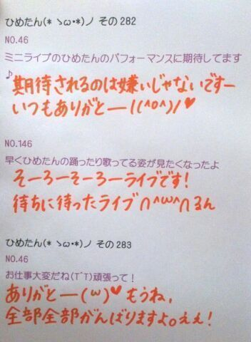
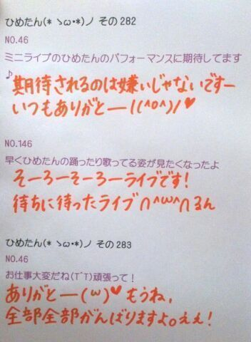

| 2013/07 09 Tue | ひめたん大図鑑54 (2012年 4 月) |
みんなイベントお疲れさまです(〃ω〃)
ひめたーんもドーム行きたかったなー
でもねーテスト頑張ってきたよー
世界史なんてめちゃ頑張ったので
前回の24点はきっとどーにかなった！
がんばったよいくちゃーん！
Zeppライブの詳細が発表されましたが
みなさんみてみたかな( ^ω^ )？
もうはやくライブリハがしたくてしたくて
ほらーテスト週間になるとやたら
お部屋片付けたいみたいなの
あるじゃないですかー

浴衣ー♪
物販の生写真のやつだよー
今年も浴衣着たいな( ω )
ひめたーんもドーム行きたかったなー
でもねーテスト頑張ってきたよー
世界史なんてめちゃ頑張ったので
前回の24点はきっとどーにかなった！
がんばったよいくちゃーん！
Zeppライブの詳細が発表されましたが
みなさんみてみたかな( ^ω^ )？
もうはやくライブリハがしたくてしたくて
ほらーテスト週間になるとやたら
お部屋片付けたいみたいなの
あるじゃないですかー
浴衣ー♪
物販の生写真のやつだよー
今年も浴衣着たいな( ω )

1112
 帽子のサイズ、Sでしょ?
帽子のサイズ、Sでしょ?
帽子ー???長いことかぶってないわあ(>_<)
1113
バスケ経験者なら当然スラムダンクは読んでるよな?
俺、全巻持ってるから貸そうか?(笑)
スラムダンク...。
名前しか存じ上げません...(>_<)
1114
ワンピースは読んでるかな?(笑)
ワンピースも読んだことないのよーきゃーごめんなさーい☆!!!
1115
家でも甘えん坊キャラなの?
家こそって感じ。
ままとわちゃわちゃ戯れてますっ∪・ω・∪♪
1116
新しい学校の制服かわいい?
ん。可愛いっ(*^^*)!
1117
初めて会った人とかどうやって仲良くなる?
1118
どうやったらいっぱい友達ができますかね??
ひめたんの場合、初めましての瞬間からうるさいけえなあ。わらっ
笑顔でいればすーぐ仲良くなれるとひめたんは思います(^^)笑顔大事よ笑顔っ
1119
どーしたら笑顔出せますかね?
ひめたんも自分の笑顔が嫌いな人だからねー(>_<)気持ちはわかっても、なんかいい事言えない...
意識してたら固い笑顔になっちゃうから、もっと楽しいこと考えたりして
素直に笑ってみてはいかが??
1120
薄いピンクがほとんどだけど、ひめたんは薄いピンクかそれとも濃いピンクかな?
1121
ピンク以外に好きな色はあるのカナ?
上の質問は、ひめたんの好みを答えればいいんかな。
どっちも好きよお(*^^*)どぎついピンクは目がちかちかして苦手かもしれん←
パステルカラーなら基本何でも好き☆!きれいっしょ??
1122
ここだけは治したい自分の恥ずかしくて困ってるクセはある?
そゆのは恥ずかしいから答えない(*/ω＼*)とかゆーて。わら
1123
今度はさいたまスタジアムの浦和レッズのホームゲームにも来てね(^o^)
1124
浦和レッズ好きなんでひめたんにもレッズを応援してほしいっす!
大宮も浦和もどっちもおんなじくらい応援しましたよ!
ひめたんも浦和さんのホームお邪魔したい(^ω^)!
機会があったらよろしくお願いします♪
1125
リーゼントの男子は好き?
似合ってればなんでも(^ω^)
結局、自分に似合う髪型をわかってる人はみんな素敵ですよ♪とかゆーて、自分なにが似合うんだろう。中元さーん。
1126
プリキュア好き?
初代のなぎさちゃんとほのかちゃんは見てたよ♪♪
２人は好きだったなー//最近は全然見てないや(>_<)
1127
普通のカルビと炙りカルビならどっちが好きですか?ww
あのう。ひとつ聞いてもいいですかね。
普通のカルビと炙りカルビってそもそも何が違うのー?
何もしてないか炙ったかの違いってことー??
1128
鬼のような仕事量こなさなきゃいけない俺に何か一言お願いします!!!
鬼!
鬼に負けるなー!!!
辛くなったらひめたんがついてますぞ(`・ω・')
負けそうになったら勇気は左の胸に!ふぁいとー☆
1129
辛いの好き?砂肝とどっちが好き?
前は辛いの好きだったけど、最近は苦手になってきつつある...。
いやーひめたん砂肝は好きで持ってたとかゆーわけでなくてー
ま確かにおいしいけどー。
1130
納豆は付いてるタレで食べる?それとも醤油で食べる?
あのー...
納豆は食わず嫌いなのです('・ω・`)
1131
幕張のアウトレットパークには来たことってありますか?^^
行ったことなーい!!!
行きたいな♪楽しそうやなー(^^)☆
1132
ユニバーサルスタジオジャパンに行ったことがありますか?何のアトラクションが好きですか??
行ったことある(^ω^)!
ジュラシックパーク!E.T.!
1133
ひとりカラオケとかひとりマックできる人でしたっけ?ひとりももクロできますか?
カラオケはいけるけどマックは何か辛いものがある。
ひとりももクロちゃん。
これまた辛いものがないですか('・ω・`)?大丈夫?
1134
広島では、やっぱり武将って言ったら毛利元就なのかな?
1135
好きな武将っている?
ひめたんは毛利さんもだけど、平清盛さんも尊敬しますよ(^ω^)
みなさん宮島の真っ赤な鳥居を見てごらんなさい。
明日終われば半分終わるー

(＊´・ω・＊)

(＊´・ω・＊)
コメント(144)
2013/07/09 22:48